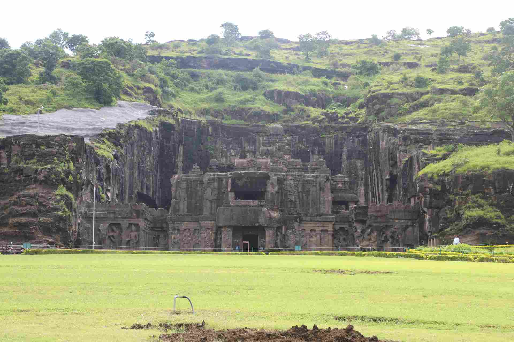
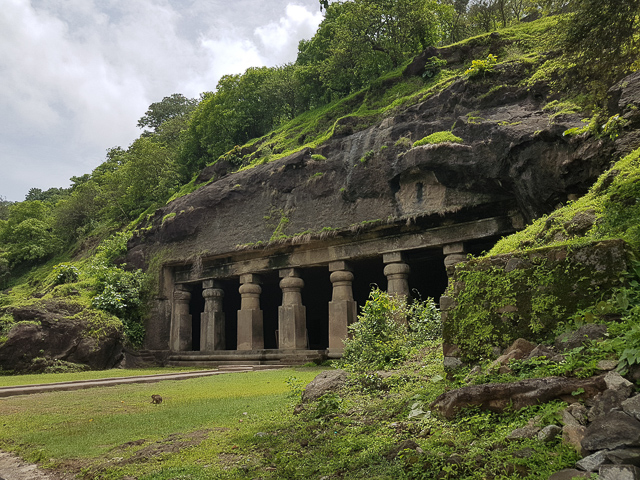
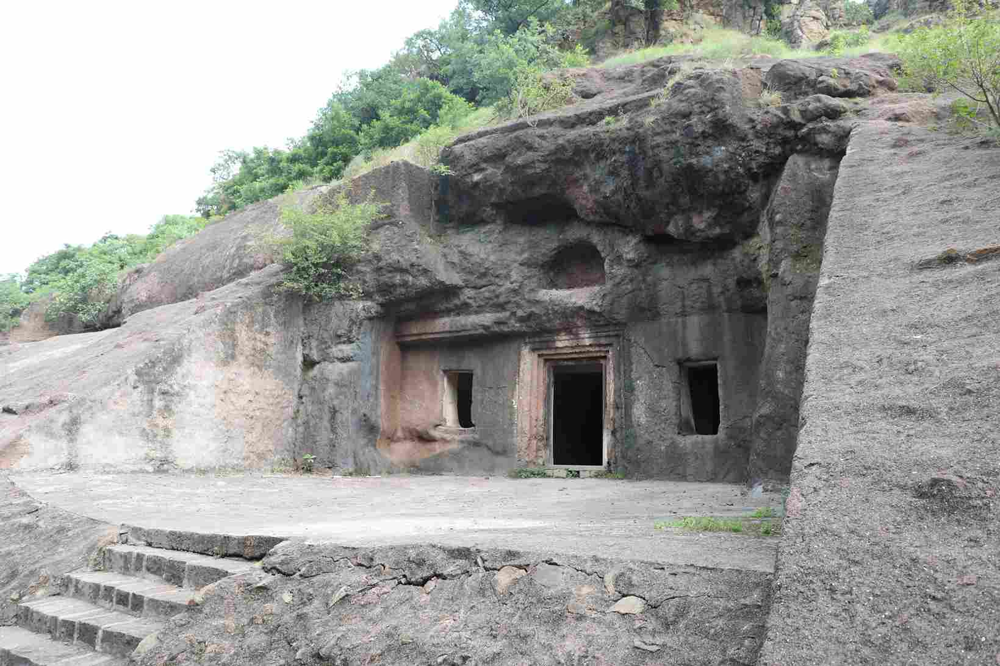
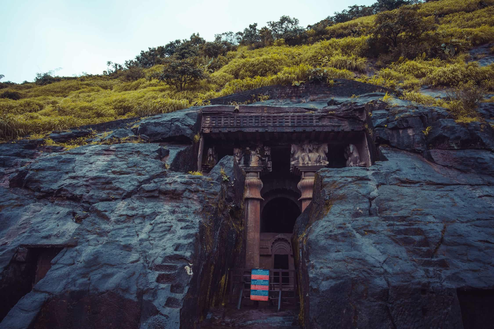
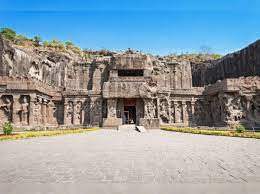

Karla Caves are one the oldest monuments of the Buddhist empire constructed between the 2nd century AD and the 5th century AD. These well-known caves represent the highest achievement of rock-cut architecture of the time and the earliest examples of ornate and richly decorated temples in India. T Read More

ELLORA CAVES
The Ellora Caves complex is an extraordinary example of ancient Indian architecture and artistry, representing a harmonious blend of Hindu, Buddhist, and Jain religious traditions. It consists of 34 major caves, excavated from the basalt cliffs of the Charanandri Hills. These caves were created between the 6th and 10th centuries. Read More

ELEPHANTA CAVES
On an island a few kilometres off the Gateway of India, you'll find a City of Caves with an impressive display of Indian architecture dating back to the 2nd century. The small island hides many archaeological remains that showcase the rich culture of the area. The caves are hewn from solid basalt rock. Read More

DHARASHIV CAVES
Dharashiv Leni are a group of Buddhist caves located in Osmanabad district, Maharashtra, India. These caves are situated in the town of Dharashiv, near the Bhoom tehsil of Osmanabad. The Dharashiv Caves are situated around 8 kilometers (5 miles) from the town of Osmanabad in Maharashtra, India. They are nestled in the hills of the region.
Read More

BEDSE CAVES
The Bedse Caves date back to the 1st century BCE and were carved out of the rocky hillsides during the Satavahana period. They are believed to have been used by Buddhist monks as places of meditation and religious activities. The caves showcase a blend of architectural styles, reflecting the influence of both Buddhism and Hinduism.
Read More

AURANGABAD CAVES
The Aurangabad Caves are situated about 5 kilometers (3.1 miles) northwest of the city of Aurangabad in the western state of Maharashtra, India. There are a total of 12 Buddhist caves at the site, which are numbered from Cave 1 to Cave 12. However, not all of them are well-preserved, and some have suffered damage over time. Read More